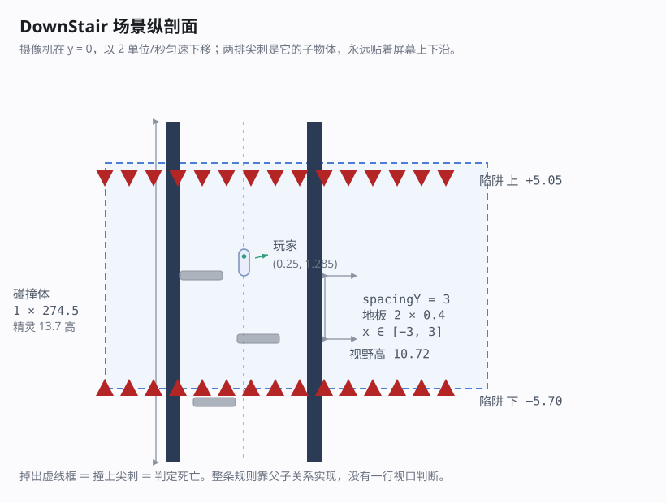
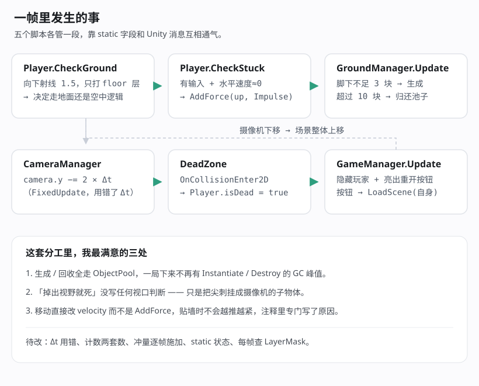

「楼梯」是我做的一个很小的 Unity 2D 项目，工程名 DownStair。整个游戏只有一个场景、五个脚本，加起来几百行 C#，但它把 2D 平台游戏里最常见的几件事都碰了一遍：重力与跳跃、射线判地面、无限生成关卡、对象池、死亡与重开。
这篇就当是给自己做一次代码复审 —— 一边把玩法循环讲清楚，一边把当时写下去、现在回头看会皱眉的地方都列出来。
一句话说清玩法
摄像机永远以 2 单位/秒匀速向下移动，地板在下面按 3 单位一层随机生成。玩家要做的事情只有一件：一直往下。
因为摄像机在往下走，原地不动的人会相对屏幕不断上升；而屏幕上下沿各挂着一排尖刺 —— 碰上去就死。所以你既不能停，也不能掉太快。有点像把《Downwell》翻过来玩。
场景里只有九个物体
场景文件 Assets/Scenes/DownStair.unity，去掉装饰用的尖刺精灵之后，真正干活的只有九个：
| 物体 | 位置 | 挂的东西 |
|---|---|---|
Main Camera | (0, 0, −10) | CameraManager |
玩家 | (0.25, 1.285) | Player + Rigidbody2D + CapsuleCollider2D |
墙壁-左 / 墙壁-右 | (∓3, 0) | BoxCollider2D |
陷阱 上 / 陷阱 下 | 摄像机子物体 | DeadZone + 一排 Triangle 尖刺 |
管理 | (−2.98, 0.18) | GameManager + GroundManager |
Canvas / EventSystem | — | 楼层数 HUD + 重开按钮 |

有几个数值值得单独记一下：
- 摄像机是正交投影，
orthographic size = 5.36，也就是可见高度 10.72；背景纯色#314D79。 - 玩家是动态刚体，质量 1、重力缩放 1，冻结了 Z 轴旋转，还开了插值（所以低帧率下移动不会抖）。
- 地板预制体
Assets/Resources/地板.prefab尺寸 2 × 0.4，放在 layer 6「floor」上，没有 Rigidbody2D（静态碰撞体）。 - 陷阱的碰撞体是 11.1 × 1 的横条，横跨整条井道，最关键是：它是摄像机的子物体。这一点后面会展开。
五个脚本，各管一段
Player.cs 84 行 输入、地面检测、跳跃、卡住自救
GroundManager.cs 106 行 地板生成与回收、楼层数 HUD
CameraManager.cs 19 行 摄像机匀速下移
DeadZone.cs 15 行 碰到尖刺 → 标记死亡
GameManager.cs 29 行 死亡后隐藏玩家、显示重开按钮一帧里大致是这样跑的：

Player.Update 每帧先向下打一条 1.5 长的射线，只和 floor 层碰撞，用结果决定走「地面逻辑」还是「空中逻辑」；GroundManager.Update 数一数玩家脚下还剩几块地板，不够就补、太多就回收；CameraManager.FixedUpdate 把摄像机往下推；一旦尖刺的碰撞回调把 Player.isDead 置为 true，GameManager 就把玩家藏起来、把重开按钮亮出来。
三个我当时写对了的地方
1. 「掉出视野就死」没有写一行视口判断
大多数教程会教你在 Update 里比较 Camera.main.WorldToViewportPoint(transform.position)，判断坐标是不是跑出 0~1 之外。这里的做法更省事：
// 陷阱 上 / 陷阱 下 是 Main Camera 的子物体
// 所以它们永远稳定在 (摄像机 y + 4.88) 和 (摄像机 y − 5.90)尖刺挂在摄像机下面，摄像机去哪儿它们去哪儿。你不需要写任何「是不是离开屏幕」的判断 —— 碰得到，就说明你已经出界了。一条父子关系替代了一整套视口逻辑，而且美术上还能顺手把尖刺画在屏幕边缘。
2. 地板走对象池，而不是随生随毁
groundPool = new ObjectPool<GameObject>(
createFunc: () => Instantiate(Resources.Load<GameObject>("地板")),
actionOnGet: obj => obj.SetActive(true),
actionOnRelease: obj => obj.SetActive(false),
actionOnDestroy: obj => Destroy(obj),
defaultCapacity: MAX_GROUND_COUNT,
maxSize: 50,
collectionCheck: false);一局下来地板会被生成、回收几十上百次。走对象池之后全程只有十来个实例在复用，完全避开了 Instantiate / Destroy 带来的 GC 峰值 —— 对这种「一直在生成」的玩法来说，这是最值得先做的一步优化。
3. 移动直接改 velocity，而不是 AddForce
// 用 velocity 直接控制水平移动，避免 AddForce 导致越推越紧
playerRigidBody2D.velocity = new Vector2(horizontalInput * moveSpeed,
playerRigidBody2D.velocity.y);这是平台游戏里一个很容易踩的坑：如果每帧用 AddForce 推水平方向，角色贴着墙的时候力还在往里使，一旦离开墙缝就会被攒下来的速度弹出去。直接赋值 velocity.x 相当于「无条件的期望速度」，既跟手又不会累积。当时写下的这句注释，现在看来是最有价值的几行字之一。
另外地面和空中用了两套速度（10 和 4），手感上的区分也是对的。
回头再看会皱眉的地方
下面这些是这次复审挑出来的，按严重程度分了三档。
一、会影响手感或正确性
① FixedUpdate 里用了 Time.deltaTime
void FixedUpdate()
{
transform.Translate(0, -downSpeed * Time.deltaTime, 0);
}物理步长固定是 0.02 秒，但每帧可能执行 0 次、1 次或多次 FixedUpdate。Time.deltaTime 返回的却是「上一渲染帧花了多久」，所以在帧率波动时，摄像机的下移速度会跟着抖。这里应该用 Time.fixedDeltaTime；如果不在意物理同步，干脆把这段搬到 Update 里用 Time.deltaTime 也行，但两者不能混着来。
② 楼层计数和地板间距是两套数，永远对不上
public float spacingY = 3; // 地板之间的真实间距
public float singleFloorHeight = 1; // 计数用的"一层楼"
...
Mathf.Abs(initPosotionY - playerPositionY) / singleFloorHeight玩家实际往下走了 3 格，HUD 却报「地下 0003 楼」。更要命的是这两个数没有任何联动 —— 你把 spacingY 从 3 调到 5，显示不会跟着变。要么让 singleFloorHeight = spacingY，要么干脆用「已经生成过多少块地板」来当楼层数，反而更贴近玩家的体感。
③ 卡住自救每帧都在施加冲量
if (Mathf.Abs(horizontalInput) > 0.5f &&
Mathf.Abs(playerRigidBody2D.velocity.x) < unstuckSpeedThreshold)
{
playerRigidBody2D.AddForce(Vector2.up * unstuckForce, ForceMode2D.Impulse);
}想法本身很好 —— 掉进两块地板的窄缝里时给你一个向上的力，自己爬出来。但 Impulse 是「一次性冲量」，放在每帧都跑的 CheckStuck() 里就变成了持续加速。卡住 5 帧，速度就叠了 5 层。加一个冷却计时器，或者改成只在「刚刚卡住」的那一帧施加一次。
④ 快速下落时可能穿过地板
玩家的 Rigidbody2D 用的是 Discrete 碰撞检测，而地板只有 0.4 厚。自由落体 10 个单位之后速度约 √(2 × 9.81 × 10) ≈ 14 单位/秒，一个物理步（0.02 秒）就走 0.28 —— 离 0.4 的板厚只剩一点余量。帧率一掉，或者以后把重力调大，就会穿板掉下去。给玩家开 Continuous 最省心。
⑤ 地板可能生成到墙里去
readonly float leftBorder = -3;
readonly float righrBorder = 3;地板宽 2，中心取到 ±3 时边缘会伸到 ±4，而墙的内侧面就在 ±3 —— 于是地板有一截插在墙里。把范围收到 ±2 刚好贴边不重叠。（顺便记一笔：这个字段名 righrBorder 少了个 t。）
二、只是浪费，不影响玩法
⑥ 每帧都在按名字查 LayerMask
Physics2D.Raycast(transform.position, Vector2.down, 1.5f,
LayerMask.GetMask("floor"));GetMask 每次都要走一遍字符串查表。在 Awake 里缓存成 int 就完事了。顺带一提：这种「按名字取层」的写法还有个隐患 —— 层名一旦被改，射线会静默返回 0，玩家就再也判定不到地面。
⑦ 每帧都在拼字符串
displayCountFloor.text = "地下" + CountLowerGroundFloor().ToString("0000") + "楼";每帧产生一个新的 string 加一次装箱。用个 int lastFloor 记住上次的值，只在整数变化时才刷新文本，这个开销就没了。
⑧ 死亡是事件，却被当成状态每帧轮询
void Update()
{
if (Player.isDead)
{
player.SetActive(false);
restartButton.gameObject.SetActive(true);
}
}死亡明明是 DeadZone 里发生的一次性事件，这里却每帧都在重复 SetActive。改成 event / Action 回调，或者至少加个「只执行一次」的标志位。
三、结构上容易埋雷
⑨ static 用得有点多
Player.isDead 是 static，GroundManager.groundPool 和 groundNumber 也是。静态字段在场景重载（也就是点重开按钮）之后依然活着 —— 这次靠 Start() 里重新赋值躲过去了，但只要哪天漏了一行，上一局的死亡状态就会带进新一局。而且 groundNumber 从头到尾就没被用过。能用实例字段就别用 static。
⑩ 墙的碰撞体是精灵的 20 倍高
墙壁-左/右 的 BoxCollider2D 本地尺寸是 (1, 20)，Transform 缩放 Y 是 13.725，乘起来世界高度 274.5；而 SpriteRenderer 画出来的墙只有 13.7 高。结果就是：玩家往下掉十几格之后，画面上早就不存在墙了，人却依然被两堵看不见的墙夹着。要么把碰撞体调成跟精灵同高，要么让墙也跟着摄像机走。
⑪ 死亡用实心碰撞而不是触发器
private void OnCollisionEnter2D(Collision2D other)
{
if (other.gameObject.CompareTag("玩家")) Player.isDead = true;
}尖刺的碰撞体没有勾 Is Trigger，所以在判定死亡之前，物理系统会先把玩家从尖刺里解算出来 —— 会有那么一两帧的推挤。既然尖刺的语义就是「碰到就死」，勾上触发器、换成 OnTriggerEnter2D 更干净，也省掉一次物理解算。
⑫ 两处没用的 using
GroundManager.cs 顶上有 using System.Collections; 和 using Unity.Mathematics;，一个都没用到。后者还会顺带牵进 Burst 相关的依赖，IDE 里灰掉的那些行值得顺手清一清。
数值一览
| 项 | 值 | 备注 |
|---|---|---|
| 重力 | 9.81（Y 轴） | Physics2D 设置，固定步长 0.02 |
| 地面速度 / 空中速度 | 10 / 4 | 区分手感 |
| 跳跃初速度 | 3 | 对应跳高 v²/2g ≈ 0.46 |
| 地板间距 | 3 | 跳跃高度只有它的 15% |
| 地板尺寸 | 2 × 0.4 | 生成范围 ±3 |
| 摄像机下移速度 | 2 /秒 | 可见高度 10.72 |
有一件事从这里能直接读出来：跳跃高度只有 0.46，而地板间距是 3 —— 玩家跳不回上一层。对这个「只能往下」的玩法来说这大概率是故意的，但如果哪天想做「往上爬」的变体，第一个要动的就是这两个数。
如果重做
把上面的问题收一收，大概会是这样一份清单：
- 死亡改成事件驱动，
DeadZone用触发器，GameManager订阅一次就够。 - 把所有
static状态收进实例字段，或者用一个GameState单例显式管起来。 LayerMask、地板预制体、字符串常量在Awake里缓存好，运行期不再按名字查。- 楼层计数直接绑定
spacingY，或者干脆改成「已生成块数」。 - 玩家的碰撞检测换成
Continuous，地板生成范围收到 ±2。 - 摄像机、墙壁都挂到同一个「跟随下移」的父物体上，让「屏幕边缘」这个概念只有一处定义。
小结
这个项目代码量很小，但它恰好覆盖了 2D 平台游戏的核心几件事，而且有两个设计是我现在依然觉得聪明的：用父子关系表达「掉出视野即死」，以及用 velocity 赋值而不是 AddForce 来处理贴墙。这两处都不是照着教程抄的，是踩了坑之后想出来的。
至于那些问题 —— Time.deltaTime 用错地方、计数用了两套数、冲量放在 Update 里 —— 全都是那种「写的时候能跑、看起来也没错」的类型。可能这就是定期回头读自己代码的意义：跑得起来不等于写对了。